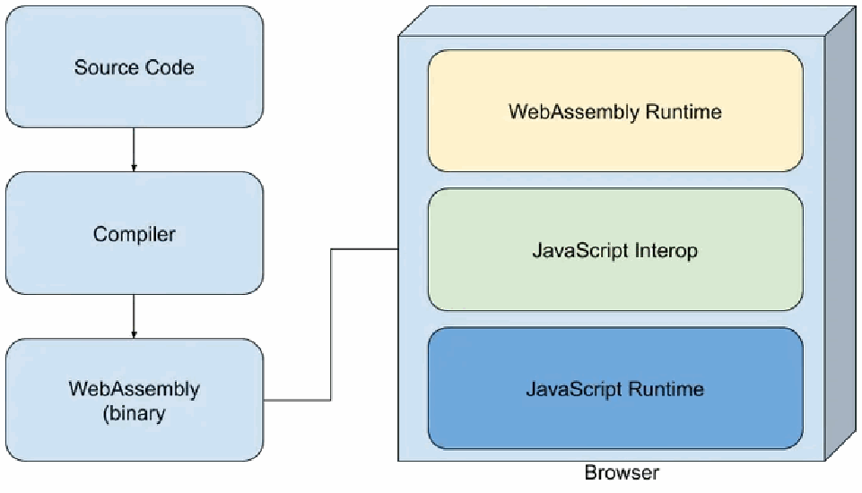

NIST IR 8505 日本語訳
英語タイトル : A Data Protection Approach for Cloud-Native Applications日本語タイトル : クラウドネイティブアプリケーションのためのデータ保護アプローチ
公開日 : 2024-09-30
原文URL : https://csrc.nist.gov/pubs/ir/8505/final
翻訳編集 : 自動生成（有志による非公式の日本語訳）, 原文取得日 : 2026-10-31, 訳文 : 272 / 274 ブロック
[要約] NIST IR 8505 は、マルチクラウド環境、サービスメッシュネットワーク、ハイブリッドインフラストラクチャを含む、進化するクラウドネイティブなネットワークアーキテクチャにおける、効果的なデータ保護戦略の必要性に対処する報告書です。基礎となるデータ分類の概念を拡張することで、転送中のデータの未知の要素に、データ保護のアプローチを整合させるためのフレームワークを提供します。具体的には、サービスメッシュアーキテクチャを探り、機微なデータが東西（east-west）および南北（north-south）の通信経路を伝送される際に、堅牢なデータ保護を確実にするための WebAssembly（WASM）の機能を活用し、強調します。
NIST Internal Report
NIST 内部報告書
NIST IR 8505
NIST IR 8505
A Data Protection Approach for Cloud-Native Applications
クラウドネイティブアプリケーションのためのデータ保護アプローチ
Ramaswamy Chandramouli
Ramaswamy Chandramouli
Wesley Hales
Wesley Hales
This publication is available free of charge from: https://doi.org/10.6028/NIST.IR.8505
本刊行物は次の URL から無償で入手できます: https://doi.org/10.6028/NIST.IR.8505
NIST Internal Report
NIST 内部報告書
NIST IR 8505
NIST IR 8505
A Data Protection Approach for Cloud-Native Applications
クラウドネイティブアプリケーションのためのデータ保護アプローチ
Ramaswamy Chandramouli Computer Security Division Information Technology Laboratory
Ramaswamy Chandramouli Computer Security Division Information Technology Laboratory
Wesley Hales Leak Signal Inc.
Wesley Hales Leak Signal Inc.
This publication is available free of charge from: https://doi.org/10.6028/NIST.IR.8505
本刊行物は次の URL から無償で入手できます: https://doi.org/10.6028/NIST.IR.8505
September 2024
2024年9月
［米国商務省の紋章。公的な標章のため、この非公式サイトには掲載していません。原本 PDF を参照してください。］
U.S. Department of Commerce Gina M. Raimondo, Secretary
米国商務省 Gina M. Raimondo 長官
National Institute of Standards and Technology
国立標準技術研究所（National Institute of Standards and Technology）
Laurie E. Locascio, NIST Director and Under Secretary of Commerce for Standards and Technology
Laurie E. Locascio、NIST 所長兼商務次官（標準・技術担当）
Certain equipment, instruments, software, or materials, commercial or non-commercial, are identified in this paper in order to specify the experimental procedure adequately. Such identification does not imply recommendation or endorsement of any product or service by NIST, nor does it imply that the materials or equipment identified are necessarily the best available for the purpose.
本論文では、実験手順を十分に特定するために、商用・非商用を問わず、特定の機器、計器、ソフトウェア、または資材を挙げています。こうした特定は、NIST がいかなる製品やサービスも推奨または支持していることを意味せず、挙げた資材や機器がその目的に最適であるとは限らないことを意味するものでもありません。
There may be references in this publication to other publications currently under development by NIST in accordance with its assigned statutory responsibilities. The information in this publication, including concepts and methodologies, may be used by federal agencies even before the completion of such companion publications. Thus, until each publication is completed, current requirements, guidelines, and procedures, where they exist, remain operative. For planning and transition purposes, federal agencies may wish to closely follow the development of these new publications by NIST.
本刊行物には、NIST が法令上割り当てられた責務に従って現在策定中のほかの刊行物への言及が含まれる場合があります。概念や方法論を含む本刊行物の情報は、そうした関連刊行物の完成前であっても、連邦政府機関が使用してもよいです。したがって、各刊行物が完成するまでは、既存の現行の要件、ガイドライン、および手順が引き続き有効です。計画および移行のため、連邦機関は、NIST によるこれらの新しい刊行物の策定状況を注意深く追うことを検討してもよいです。
Organizations are encouraged to review all draft publications during public comment periods and provide feedback to NIST. Many NIST cybersecurity publications, other than the ones noted above, are available at https://csrc.nist.gov/publications.
組織は、すべてのドラフト刊行物についてパブリックコメント期間中に確認し、NIST にフィードバックを提供することが推奨されます。上記以外の NIST のサイバーセキュリティ関連刊行物の多くは https://csrc.nist.gov/publications で入手できます。
NIST Technical Series Policies Copyright, Use, and Licensing Statements NIST Technical Series Publication Identifier Syntax
NIST Technical Series の方針 著作権・使用・ライセンスに関する声明 NIST Technical Series 刊行物識別子の構文
Publication History Approved by the NIST Editorial Review Board on 2024-09-24
刊行履歴 2024-09-24 に NIST Editorial Review Board が承認
How to Cite this NIST Technical Series Publication Chandramouli R, Hales W (2024) A Data Protection Approach for Cloud-Native Applications. (National Institute of Standards and Technology, Gaithersburg, MD), NIST Interagency Report (IR) NIST IR 8505. https://doi.org/10.6028/NIST.IR.8505
本 NIST Technical Series 刊行物の引用方法 Chandramouli R, Hales W (2024) A Data Protection Approach for Cloud-Native Applications. (National Institute of Standards and Technology, Gaithersburg, MD), NIST Interagency Report (IR) NIST IR 8505. https://doi.org/10.6028/NIST.IR.8505
Author ORCID iDs Ramaswamy Chandramouli: 0000-0002-7387-5858
著者の ORCID iD Ramaswamy Chandramouli: 0000-0002-7387-5858
Contact Information nistir-8505-comments@nist.gov
連絡先 nistir-8505-comments@nist.gov
National Institute of Standards and Technology Attn: Computer Security Division, Information Technology Laboratory 100 Bureau Drive (Mail Stop 8930) Gaithersburg, MD 20899-8930
National Institute of Standards and Technology Attn: Computer Security Division, Information Technology Laboratory 100 Bureau Drive (Mail Stop 8930) Gaithersburg, MD 20899-8930
Additional Information Additional information about this publication is available at https://csrc.nist.gov/pubs/ir/8505/final, including related content, potential updates, and document history.
追加情報 本刊行物に関する追加情報（関連コンテンツ、更新の可能性、文書の履歴を含む）は https://csrc.nist.gov/pubs/ir/8505/final で入手できます。
All comments are subject to release under the Freedom of Information Act (FOIA).
寄せられたコメントはすべて、情報自由法（FOIA）に基づく公開の対象となります。
Abstract
概要
This document addresses the need for effective data protection strategies in the evolving realm of cloud-native network architectures, including multi-cloud environments, service mesh networks, and hybrid infrastructures. By extending foundational data categorization concepts, it provides a framework for aligning data protection approaches with the unknowns of data in transit. Specifically, it explores service mesh architecture, leveraging and emphasizing the capabilities of WebAssembly (WASM) in ensuring robust data protection as sensitive data are transmitted through east-west and north-south communication paths.
本書は、マルチクラウド環境、サービスメッシュネットワーク、ハイブリッドインフラストラクチャを含む、進化するクラウドネイティブなネットワークアーキテクチャの領域における、効果的なデータ保護戦略の必要性に対処します。基礎となるデータ分類の概念を拡張することで、転送中のデータに関する未知の要素に対応したデータ保護アプローチを整合させるためのフレームワークを提供します。具体的には、サービスメッシュアーキテクチャを探り、機微なデータが東西（east-west）および南北（north-south）の通信経路を伝送される際に、堅牢なデータ保護を確実にするための WebAssembly（WASM）の機能を活用し、強調します。
Keywords
キーワード
data governance; data privacy; data protection; data security; in-transit data categorization; WASM.
データガバナンス、データプライバシー、データ保護、データセキュリティ、転送中データの分類、WASM。
Reports on Computer Systems Technology
コンピュータシステム技術に関する報告書
The Information Technology Laboratory (ITL) at the National Institute of Standards and Technology (NIST) promotes the U.S. economy and public welfare by providing technical leadership for the Nation’s measurement and standards infrastructure. ITL develops tests, test methods, reference data, proof of concept implementations, and technical analyses to advance the development and productive use of information technology. ITL’s responsibilities include the development of management, administrative, technical, and physical standards and guidelines for the cost-effective security and privacy of other than national security-related information in federal information systems.
国立標準技術研究所（NIST）の情報技術研究所（ITL）は、国の計測・標準インフラに技術的なリーダーシップを提供することで、米国経済と公共の福祉を促進しています。ITL は、情報技術の開発と生産的な利用を進めるため、テスト、テスト方法、参照データ、概念実証の実装、および技術分析を開発しています。ITL の責務には、連邦政府の情報システムにおける、国家安全保障に関連するもの以外の情報について、費用対効果の高いセキュリティとプライバシーのための管理上、事務上、技術上、および物理上の標準およびガイドラインの策定が含まれます。
Patent Disclosure Notice
特許開示に関する通知
NOTICE: ITL has requested that holders of patent claims whose use may be required for compliance with the guidance or requirements of this publication disclose such patent claims to ITL. However, holders of patents are not obligated to respond to ITL calls for patents and ITL has not undertaken a patent search in order to identify which, if any, patents may apply to this publication.
通知: ITL は、本刊行物のガイダンスまたは要件への準拠にその使用が必要となる可能性のある特許請求項の保有者に対し、当該特許請求項を ITL に開示するよう依頼しました。ただし、特許の保有者には ITL の特許照会に回答する義務はなく、ITL は、本刊行物に該当する特許があるとすればどれかを特定するための特許調査を行っていません。
As of the date of publication and following call(s) for the identification of patent claims whose use may be required for compliance with the guidance or requirements of this publication, no such patent claims have been identified to ITL.
公表日の時点で、本刊行物のガイダンスまたは要件への準拠にその使用が必要となる可能性のある特許請求項の特定を求める照会を行いましたが、そのような特許請求項は ITL に対して特定されていません。
No representation is made or implied by ITL that licenses are not required to avoid patent infringement in the use of this publication.
本刊行物の使用にあたり、特許侵害を避けるためにライセンスが不要であることを、ITL は表明も示唆もしていません。
Table of Contents
目次
1. Introduction
1. はじめに
In the constantly evolving landscape of cloud-native application architectures, where data reside in multiple locations (i.e., on-premises and on the cloud), ensuring data security involves more than simply specifying and granting authorization during service requests. It also involves a comprehensive strategy to categorize and analyze data access and leakage as data travel across various protocols (e.g., gRemote Procedure calls (gRPC), Representational State Transfer (REST)-based), especially within ephemeral and scalable microservices applications.
クラウドネイティブなアプリケーションアーキテクチャの状況は絶えず進化しており、データはオンプレミスとクラウドなど複数の場所に存在します。そこでは、データのセキュリティの確保は、サービス要求時に認可を指定して付与するだけにとどまりません。さまざまなプロトコル（Remote Procedure Calls［gRPC］や Representational State Transfer［REST］ベースなど）をデータが移動する際の、データへのアクセスと漏えいを分類して分析する包括的な戦略も必要です。特に、一時的でスケーラブルなマイクロサービスアプリケーション内ではそうです。
Data in-transit is one of the three states of digital data, according to the NIST Cyber Security Framework (CSF) 2.0. It refers to structured and unstructured human-readable text that is actively moving from one location to another, such as across the internet, through a private network, or between devices and systems. This can include data being transferred from a client to a server, between servers, or from one part of a network to another.
NIST Cybersecurity Framework（CSF）2.0 によれば、転送中のデータは、デジタルデータの 3 つの状態の 1 つです。これは、インターネット経由、プライベートネットワーク経由、あるいは機器やシステム間など、ある場所から別の場所へ移動中の、構造化および非構造化の、人間が読める形式のテキストを指します。これには、クライアントからサーバーへ、サーバー間で、あるいはネットワークのある部分から別の部分へ転送されるデータが含まれる場合があります。
1.1. Existing Approaches to Data Protection and Their Limitations
1.1. データ保護の既存のアプローチとその限界
Traditionally, regular expressions (regex) have been widely used for data categorization to identify patterns that match predefined categories or data classes with the aid of keywords and validators for enhanced precision. Despite its wide adoption and usage, the approach has notable limitations. The processing time scales linearly with data volume, making it impractical for very large datasets. Regex also lacks the capability for logical computations, which are necessary for complex validations like checksums in credit card numbers. Its effectiveness heavily relies on the correct proximity to specific keywords, leading to potential false positives and considerable noise if not managed correctly.
従来、データの分類には正規表現（regex）が広く使われてきました。精度を高めるキーワードや検証子の助けを借りて、あらかじめ定義されたカテゴリやデータクラスに一致するパターンを特定するものです。広く採用され使用されているにもかかわらず、この方法には顕著な限界があります。処理時間はデータ量に比例して増加するため、非常に大規模なデータセットには実用的ではありません。正規表現には論理的な計算の能力もなく、クレジットカード番号のチェックサムのような複雑な検証には、それが必要です。その有効性は、特定のキーワードに対する正しい近接性に大きく依存するため、適切に管理されなければ、誤検知の可能性と多大なノイズにつながります。
Machine learning (ML) offers a promising enhancement to data categorization by learning from data patterns and improving over time, thus providing a scalable and adaptable solution. ML algorithms can handle both structured and unstructured data, predict data categories based on historical data, and adjust to new patterns without explicit reprogramming. This adaptability significantly reduces the time and computational resources required to manage complex datasets and is effective for both data at rest and in motion.
機械学習（ML）は、データのパターンから学習して時間とともに改善することで、データ分類の有望な強化策を提供し、スケーラブルで適応性のあるソリューションとなります。ML のアルゴリズムは、構造化データと非構造化データの両方を扱い、過去のデータに基づいてデータのカテゴリを予測し、明示的な再プログラミングなしに新しいパターンに適応できます。この適応性により、複雑なデータセットを管理するために必要な時間と計算資源が大幅に削減され、保存中のデータと移動中のデータの両方に有効です。
To address and compensate for the limitations of traditional data-at-rest inventory, in-transit data categorization has recently come to light as the next logical step in data protection. Unlike the former, which only secures stored information, in-transit categorization actively monitors and secures data as they move across services and network protocols. This shift to real-time data analysis within the network brings new observability capabilities, eliminating the need for traffic mirroring and data duplication.
従来の保存中データの一覧管理の限界に対処し、それを補うために、転送中のデータの分類が、データ保護の次の論理的なステップとして最近注目されるようになりました。保存された情報しか保護しない前者とは異なり、転送中の分類は、データがサービスやネットワークプロトコルを移動する際に、能動的に監視し、保護します。このネットワーク内でのリアルタイムのデータ分析への移行は、新たな可観測性の機能をもたらし、トラフィックのミラーリングやデータの複製を不要にします。
1.2. In-Proxy Application for Data Protection
1.2. データ保護のためのプロキシ内アプリケーション
To address the need for data categorization during travel across services, a relatively new class of in-proxy applications called the WebAssembly [1] program (also called a WASM module) has been increasingly deployed. A WASM module is a lightweight executable compiled to low-level bytecode. This bytecode can be:
サービス間を移動する間にデータを分類する必要性に対処するため、WebAssembly [1] プログラム（WASM モジュールとも呼ばれます）と呼ばれる比較的新しい種類のプロキシ内アプリケーションの配備が増えています。WASM モジュールは、低レベルのバイトコードにコンパイルされた軽量の実行ファイルです。このバイトコードは、次のようにできます。
(a)Generated from code written in any language using their associated WebAssembly compilers, including C, C++, and Rust
(a)C、C++、Rust を含む任意の言語で書かれたコードから、それぞれの WebAssembly コンパイラーを使って生成される
(b)Run using a WASM runtime in an isolated virtual machine (VM) within the proxy, which allows developers to enhance applications with necessary functionality and run them as efficiently as native code in the proxies.
(b)プロキシ内の分離された仮想マシン（VM）で WASM ランタイムを使って実行されます。これにより、開発者は必要な機能でアプリケーションを強化し、プロキシ内でネイティブコードと同等の効率で実行できます。
Over the last few years, the Envoy WASM VM [3] has enabled new types of compute and traffic processing capabilities and allowed for custom WASM modules to be built and deployed in a sandboxed and fault-tolerant manner.
ここ数年、Envoy WASM VM [3] は、新しい種類の計算およびトラフィック処理の機能を可能にし、カスタムの WASM モジュールをサンドボックス化された耐障害性のある方法で構築・配備できるようにしてきました。
Additionally, the following features of WebAssembly modules make them particularly effective for data protection:
さらに、WebAssembly モジュールの次の特徴は、データ保護に特に有効です。
•Data Discovery and Categorization: WASM modules can dynamically identify and categorize data as they traverse the network, ensuring that sensitive information is recognized and handled appropriately.
•データの発見と分類: WASM モジュールは、データがネットワークを通過する際に動的に識別して分類でき、機微な情報が認識され、適切に処理されることを確実にします。
•Dynamic Data Masking (DDM): WASM modules can apply DDM techniques to redact or mask sensitive information in transit, enhancing privacy and security.
•動的データマスキング（DDM）: WASM モジュールは、DDM 技術を適用して転送中の機微な情報を削除またはマスクでき、プライバシーとセキュリティを高めます。
•User and Entity Behavior Analytics (UEBA): WASM modules can analyze user and entity behaviors in real time, detecting anomalies and potential security threats.
•ユーザー・エンティティ行動分析（UEBA）: WASM モジュールは、ユーザーとエンティティの行動をリアルタイムで分析でき、異常や潜在的なセキュリティ脅威を検知します。
•Data Loss Prevention (DLP): WASM modules can enforce DLP policies by monitoring and controlling data transfers to prevent unauthorized data exfiltration.
•データ損失防止（DLP）: WASM モジュールは、データ転送を監視・制御することで DLP ポリシーを実施でき、権限のないデータの持ち出しを防ぎます。
1.3. Objective and Scope of This Document
1.3. 本書の目的と範囲
All services (e.g., networking, security, monitoring) for microservices-based applications are provided by a centralized infrastructure called the service mesh, and the data plane for this service mesh — which performs all runtime tasks — consists of proxies. This document outlines a practical framework for effective data protection and highlights the versatile capabilities of WebAssembly (WASM) within service mesh architectures, multi-cloud environments, and hybrid (i.e., a combination of on-premises and cloud-based) infrastructures. By focusing on in-line, network traffic analysis at layers 4–7, organizations can enhance security, streamline operations, and utilize adaptive data protection measures.
マイクロサービスベースのアプリケーションに対するすべてのサービス（ネットワーク、セキュリティ、監視など）は、サービスメッシュと呼ばれる集中型のインフラストラクチャによって提供されます。このサービスメッシュのデータプレーンは、すべての実行時タスクを実行するもので、プロキシで構成されます。本書は、効果的なデータ保護のための実用的なフレームワークの概要を示し、サービスメッシュアーキテクチャ、マルチクラウド環境、ハイブリッド（すなわちオンプレミスとクラウドベースの組み合わせ）インフラストラクチャにおける WebAssembly（WASM）の多用途な機能を強調します。組織は、レイヤー 4～7 でのインラインのネットワークトラフィック分析に焦点を当てることで、セキュリティを強化し、運用を合理化し、適応的なデータ保護対策を活用できます。
1.4. Organization of This Document
1.4. 本書の構成
This document is organized as follows:
本書の構成は次のとおりです。
•Section 2 describes the execution environment for WASM modules in detail, including the application infrastructure (i.e., service mesh) under which it runs, the specific host environment (i.e., proxies), the process for generating bytecodes and executables, the processes for executing the modules using a WASM runtime, and an application programming interface (API) (i.e., WebAssembly System Interface (WASI) for accessing operating system (OS) resources of the underlying platform.
•第 2 節では、WASM モジュールの実行環境を詳細に説明します。これには、モジュールが動作するアプリケーションインフラストラクチャ（すなわちサービスメッシュ）、特定のホスト環境（すなわちプロキシ）、バイトコードと実行ファイルを生成するプロセス、WASM ランタイムを使ってモジュールを実行するプロセス、および基盤となるプラットフォームのオペレーティングシステム（OS）リソースにアクセスするためのアプリケーションプログラミングインターフェース（API）（すなわち WebAssembly System Interface（WASI））が含まれます。
•Section 3 introduces the concept of data categorization and the use of various data protection techniques (e.g., data masking, redaction) to ensure the security of data in different domains or application scenarios using WASM modules, such as web traffic data protection, API Security, microsegmentation, log traffic data protection, Large Language Model (LLM) traffic data protection, and integration with monitoring tools for the visualization of sensitive data flows.
•第 3 節では、データ分類の概念と、Web トラフィックのデータ保護、API セキュリティ、マイクロセグメンテーション、ログトラフィックのデータ保護、大規模言語モデル（LLM）トラフィックのデータ保護、機微なデータフローを可視化する監視ツールとの統合など、WASM モジュールを使ったさまざまなドメインやアプリケーションシナリオでデータのセキュリティを確保するための、さまざまなデータ保護技術（データマスキング、編集など）の使用を紹介します。
•Section 4 presents a detailed security analysis of a WASM module by examining its development, deployment, and execution environment to ensure that the module satisfies the properties of a security kernel and can provide the necessary security assurance.
•第 4 節では、WASM モジュールの開発、配備、実行環境を調べることで、そのモジュールがセキュリティカーネルの特性を満たし、必要なセキュリティ保証を提供できることを確実にするための、WASM モジュールの詳細なセキュリティ分析を示します。
•Section 5 provides a summary of the topics covered in this document and discusses how WASM module functionality must continuously evolve to provide the security assurance needed to protect against data breaches and exfiltration in the context of increasingly sophisticated attacks on data.
•第 5 節では、本書で扱ったトピックを要約し、データに対する攻撃がますます巧妙化する状況で、データ侵害や持ち出しから保護するために必要なセキュリティ保証を提供するため、WASM モジュールの機能が継続的に進化しなければならないことを論じます。
2. Web Assembly Background
2. WebAssembly の背景
WebAssembly modules are deployed to protect data on microservices-based architectures in which the entire application (also called a cloud-native application because of its ubiquitous deployment in cloud and hybrid environments) consists of several distributed, loosely coupled, and independently scalable components called microservices. All services for this class of application (e.g., networking, security policies enforcement, state monitoring, configuration of runtime parameters) are provided by a centralized application-independent service infrastructure called the service mesh. This service mesh consists of a data plane that is primarily made up of proxies that house the various service modules. Using the family of APIs provided by the proxies, relevant service modules (e.g., network path determination) are implemented using the management/control plane of the service mesh. The WebAssembly is one such service module ecosystem implemented in the data plane proxies of a service mesh.
WebAssembly モジュールは、アプリケーション全体（クラウドやハイブリッド環境で広く配備されることから、クラウドネイティブアプリケーションとも呼ばれます）が、マイクロサービスと呼ばれる、分散し、疎結合で、独立してスケーラブルな複数のコンポーネントで構成される、マイクロサービスベースのアーキテクチャ上のデータを保護するために配備されます。この種のアプリケーションに対するすべてのサービス（ネットワーク、セキュリティポリシーの実施、状態の監視、実行時パラメーターの構成など）は、サービスメッシュと呼ばれる、アプリケーションに依存しない集中型のサービスインフラストラクチャによって提供されます。このサービスメッシュは、主に、さまざまなサービスモジュールを収容するプロキシで構成されるデータプレーンを持ちます。プロキシが提供する一群の API を使い、関連するサービスモジュール（ネットワーク経路の決定など）が、サービスメッシュの管理/制御プレーンを使って実装されます。WebAssembly は、サービスメッシュのデータプレーンのプロキシに実装されるそのようなサービスモジュールのエコシステムの 1 つです。
2.1. Origin
2.1. 起源
WASM modules originated in browser environments and were designed to run in memory-safe sandboxes, making them more secure than running client-side JavaScript. The execution model for running WebAssembly code in browsers is given in Appendix A. In addition to security, WASM modules have the following advantages [1]:
WASM モジュールはブラウザー環境で生まれ、メモリ安全なサンドボックスで実行されるように設計されたため、クライアントサイドの JavaScript を実行するよりもセキュアです。ブラウザーで WebAssembly のコードを実行する実行モデルは、付録 A に示します。セキュリティに加えて、WASM モジュールには次の利点があります [1]。
•Performance: Due to its low-level binary format targeted for modern processors, WASM modules provide near-native performance. Hence, it is considered the “fourth language” for the web alongside HTML, Cascading Style Sheets (CSS), and JavaScript and is designed to enable high-performance applications in browsers.
•性能: 最新のプロセッサーを対象とした低レベルのバイナリ形式のおかげで、WASM モジュールはネイティブに近い性能を提供します。そのため、HTML、Cascading Style Sheets（CSS）、JavaScript と並ぶ Web の「第 4 の言語」とみなされ、ブラウザーで高性能なアプリケーションを可能にするよう設計されています。
•Broad support: It has broad accessibility and is supported in popular browsers, such as Chrome, Firefox, Edge, and Safari.
•幅広いサポート: 幅広く利用でき、Chrome、Firefox、Edge、Safari などの一般的なブラウザーでサポートされています。
2.2. Progression Into Server-Side Environments
2.2. サーバーサイド環境への展開
WASM modules progressed from browser to server environments when Mozilla introduced an open-source project called the WebAssembly System Interface (WASI) that provided a framework for WebAssembly apps to access operating system resources [4]. This allowed for content delivery networks (CDNs) to use WebAssembly to deploy customers’ apps without giving them access to the underlying CDN infrastructure.
WASM モジュールがブラウザー環境からサーバー環境へと展開したのは、Mozilla が、WebAssembly アプリがオペレーティングシステムのリソースにアクセスするためのフレームワークを提供する、WebAssembly System Interface（WASI）というオープンソースプロジェクトを立ち上げたときでした [4]。これにより、コンテンツ配信ネットワーク（CDN）は、顧客のアプリに基盤となる CDN インフラストラクチャへのアクセスを与えることなく、WebAssembly を使って顧客のアプリを配備できるようになりました。
2.2.1. Development and Deployment Process
2.2.1. 開発・配備プロセス
The emergence of WASM compilers for several languages enabled developers to use their preferred languages to create server-side applications. Additionally, server-side WASM code could run inside containers as well as VMs. It is a potential candidate for SaaS-based offerings, just like VMs and containers. Its portability allows applications to run anywhere, making it an attractive option for various use cases.
複数の言語向けの WASM コンパイラーが登場したことで、開発者は、好みの言語でサーバーサイドアプリケーションを作成できるようになりました。さらに、サーバーサイドの WASM コードは、VM だけでなくコンテナー内でも実行できます。VM やコンテナーと同様に、SaaS ベースの提供の候補となりえます。そのポータビリティにより、アプリケーションはどこでも実行でき、さまざまなユースケースに魅力的な選択肢となっています。
The steps involved in developing a WASM module and running it using WASM runtime are [6]:
WASM モジュールを開発し、WASM ランタイムを使って実行する手順は次のとおりです [6]。
•Source code writing: Programs are written in languages (e.g., C++, C#, Rust) that have target WASM compilers available.
•ソースコードの記述: WASM コンパイラーが利用可能な言語（C++、C#、Rust など）でプログラムを記述します。
•Parsing: The code is parsed into an abstract syntax tree (AST) structure.
•構文解析: コードを抽象構文木（AST）構造に構文解析します。
•Compiling: The code in Abstract Syntax (AST) structure is then compiled into a WASM module using Ahead-of-Time (AOT) or Just-in-Time ( JIT). The WASM module is generated in a binary format that can be executed by WASM runtime.
•コンパイル: 抽象構文木（AST）構造のコードを、Ahead-of-Time（AOT）または Just-in-Time（JIT）を使って、WASM モジュールにコンパイルします。WASM モジュールは、WASM ランタイムで実行できるバイナリ形式で生成されます。
•WASM runtime loading: The WASM runtime loads the WASM module (with file name extension .wasm). If JIT is used, the compilation takes place after loading into WASM runtime.
•WASM ランタイムへの読み込み: WASM ランタイムが WASM モジュール（ファイル拡張子 .wasm）を読み込みます。JIT を使う場合、コンパイルは WASM ランタイムへの読み込み後に行われます。
•Preparation for execution (i.e., instantiation): The WASM runtime creates an executable instance from the WASM module by allocating memory, importing functions and objects, and establishing the execution environment for the module.
•実行の準備（すなわちインスタンス化）: WASM ランタイムは、メモリを割り当て、関数とオブジェクトをインポートし、モジュールの実行環境を確立することで、WASM モジュールから実行可能なインスタンスを作成します。
•Code optimization: During execution of the byte code, profiling is employed to identify frequently executed code, and a progressive optimization/re-optimization process takes place to gradually enhance performance until the code runs efficiently.
•コードの最適化: バイトコードの実行中に、頻繁に実行されるコードを特定するためにプロファイリングが使われ、コードが効率的に実行されるようになるまで性能を徐々に高める、段階的な最適化/再最適化のプロセスが行われます。
Figure 1 shows the ability to develop programs in different languages, convert them into WASM code, and run them under different processor architectures [4]. The execution model for WASM modules in the server environment and their comparison with the container execution model are described in Appendix B.
図 1 は、異なる言語でプログラムを開発し、それらを WASM コードに変換し、異なるプロセッサーアーキテクチャ上で実行できることを示しています [4]。サーバー環境における WASM モジュールの実行モデルと、コンテナーの実行モデルとの比較は、付録 B で説明します。
［第三者の画像。第三者の著作物のため、この非公式サイトには掲載していません。原本 PDF を参照してください。］
Fig. 1. Generating WASM modules and their execution [4]
図 1. WASM モジュールの生成と実行 [4]
2.3. Proxies as WASM Platforms
2.3. WASM のプラットフォームとしてのプロキシ
Proxies are increasingly being used as platforms for executing WASM modules. In cloud-native and microservices-based applications, proxies mediate inter-service communication. Open-source projects in proxies, such as Envoy, have extended their filter chain to allow for calling and executing WASM modules. These WASM modules can enforce policy-based authorizations or implement network resiliency measures, providing essential security controls for such applications. Additionally, the capabilities of these modules can be leveraged for data protection purposes.
プロキシは、WASM モジュールを実行するプラットフォームとして利用が増えています。クラウドネイティブでマイクロサービスベースのアプリケーションでは、プロキシがサービス間の通信を仲介します。Envoy などのプロキシのオープンソースプロジェクトは、WASM モジュールの呼び出しと実行を可能にするよう、フィルターチェーンを拡張しています。これらの WASM モジュールは、ポリシーベースの認可を実施したり、ネットワークの耐障害性対策を実装したりして、そのようなアプリケーションに不可欠なセキュリティ制御を提供できます。さらに、これらのモジュールの機能は、データ保護の目的にも活用できます。
The advantages of network-based WASM modules include:
ネットワークベースの WASM モジュールの利点には、次のものがあります。
1.Extensibility: Proxies like Envoy can be extended with WASM modules, allowing developers to introduce custom logic and functionality without modifying the proxy’s core codebase. This extensibility allows for the seamless integration of new features and capabilities.
1.拡張性: Envoy などのプロキシは WASM モジュールで拡張でき、開発者はプロキシのコアコードベースを変更することなく、独自のロジックと機能を導入できます。この拡張性により、新しい特徴と機能をシームレスに統合できます。
2.Security and isolation: WASM modules run in a sandboxed environment, providing isolation from the host system and other modules. This isolation enhances security by preventing unauthorized access to system resources and mitigating the impact of potential vulnerabilities.
2.セキュリティと分離: WASM モジュールはサンドボックス化された環境で実行され、ホストシステムやほかのモジュールからの分離を提供します。この分離は、システムリソースへの権限のないアクセスを防ぎ、潜在的な脆弱性の影響を緩和することで、セキュリティを高めます。
3.Portability: WebAssembly’s portability ensures that WASM modules can run consistently across different proxy implementations and platforms, promoting a write-once, run-anywhere approach.
3.ポータビリティ: WebAssembly のポータビリティにより、WASM モジュールは異なるプロキシ実装やプラットフォームで一貫して実行でき、一度書けばどこでも実行できるというアプローチを促進します。
4.Performance: WASM modules can potentially offer better performance compared to the traditional scripting languages used for proxy extensions since they can be compiled to efficient machine code.
4.性能: WASM モジュールは、効率的な機械語にコンパイルできるため、プロキシの拡張に使われる従来のスクリプト言語と比べて、より優れた性能を提供できる可能性があります。
5.Policy enforcement and network resiliency: By executing WASM modules in proxies, organizations can enforce policies, implement authorization controls, and introduce network resiliency measures at the proxy level, ensuring consistent and centralized enforcement across distributed applications.
5.ポリシーの実施とネットワークの耐障害性: プロキシ内で WASM モジュールを実行することで、組織はプロキシレベルでポリシーを実施し、認可制御を実装し、ネットワークの耐障害性対策を導入でき、分散アプリケーション全体で一貫した集中的な実施を確実にします。
6.Data protection: WASM modules in proxies can be used to implement data filtering, transformation, or encryption mechanisms and ensure sensitive data protection as they flow through the proxy.
6.データ保護: プロキシ内の WASM モジュールは、データのフィルタリング、変換、暗号化の仕組みを実装するために使用でき、機微なデータがプロキシを通過する際の保護を確実にします。
7.Ecosystem and community: The growing WebAssembly ecosystem and community provide libraries, tools, and resources that foster collaboration and accelerate the development of proxy extensions and data protection solutions.
7.エコシステムとコミュニティ: 成長を続ける WebAssembly のエコシステムとコミュニティは、ライブラリ、ツール、リソースを提供し、連携を促進して、プロキシの拡張とデータ保護ソリューションの開発を加速させます。
As WASM continues to mature, its role in proxies will expand, enabling proxies to act as robust platforms for security and application logic execution. This evolution is particularly pertinent to data protection, which stands as a central theme of contemporary application development.
WASM が成熟を続けるにつれ、プロキシにおけるその役割は拡大し、プロキシがセキュリティとアプリケーションロジックの実行のための堅牢なプラットフォームとして機能できるようになります。この進化は、現代のアプリケーション開発の中心的なテーマであるデータ保護に特に関連しています。
2.4. Proxy-WASM
2.4. Proxy-WASM
Envoy Proxy, an open-source edge and service proxy, plays a pivotal role in managing the flow of traffic between microservices in many service mesh deployments. The collection of extensible APIs that it provides for various services is designated as xDS. An extension API that leverages the extensibility of these basic, foundational APIs of Envoy Proxy is the WebAssembly for Proxies (Proxy-WASM) runtime.
オープンソースのエッジおよびサービスプロキシである Envoy Proxy は、多くのサービスメッシュの配備において、マイクロサービス間のトラフィックの流れを管理するうえで中心的な役割を果たします。さまざまなサービス向けに Envoy Proxy が提供する、拡張可能な API の集まりは、xDS と呼ばれます。Envoy Proxy のこれらの基本的で基礎的な API の拡張性を活用する拡張 API が、WebAssembly for Proxies（Proxy-WASM）ランタイムです。
Proxy-WASM extends the adaptability of Envoy Proxy by enabling the deployment of WebAssembly modules within the proxy server. This integration allows for the execution of custom code directly within the proxy, providing a platform-independent and secure environment. The modularity of WebAssembly makes it an ideal choice for extending the functionalities of Envoy Proxy without the need for recompilation or significant changes to the existing infrastructure.
Proxy-WASM は、プロキシサーバー内への WebAssembly モジュールの配備を可能にすることで、Envoy Proxy の適応性を拡張します。この統合により、プラットフォームに依存しないセキュアな環境で、独自のコードをプロキシ内で直接実行できます。WebAssembly のモジュール性により、再コンパイルや既存のインフラストラクチャの大幅な変更を必要とせずに Envoy Proxy の機能を拡張するのに理想的な選択肢となっています。
The architecture of Proxy-WASM within Envoy Proxy allows for the seamless integration and execution of custom logic at various stages of the request-response cycle. For example, a WASM module can intercept requests, inspect payload data, apply data categorizations, and redact data before proceeding. This level of granular control enhances the security posture of microservices architectures while maintaining performance and scalability.
Envoy Proxy 内の Proxy-WASM のアーキテクチャにより、要求と応答のサイクルのさまざまな段階で、独自のロジックをシームレスに統合して実行できます。たとえば、WASM モジュールは、要求を横取りし、ペイロードデータを検査し、データの分類を適用し、処理を進める前に機微データを伏字化できます。この粒度の細かい制御により、性能とスケーラビリティを維持しながら、マイクロサービスアーキテクチャのセキュリティ態勢が強化されます。
Thus, we see that Proxy-WASM can be leveraged to implement robust security measures for microservices communication by performing tasks, such as data categorization and mitigation directly within the proxy.
このように、Proxy-WASM は、データの分類や緩和などのタスクをプロキシ内で直接実行することで、マイクロサービス通信に対する堅牢なセキュリティ対策を実装するために活用できることがわかります。
2.4.1. Role of WASM in Different Service Mesh Architectures
2.4.1. さまざまなサービスメッシュアーキテクチャにおける WASM の役割
Service mesh architectures have traditionally utilized sidecar proxies, which are implemented as containers and deployed alongside each service within a Kubernetes [5] pod. These sidecar proxies manage both inbound and outbound traffic for their respective services, creating an ideal WASM-based insertion point for in-transit categorization.
サービスメッシュアーキテクチャは従来、サイドカープロキシを利用してきました。これはコンテナーとして実装され、Kubernetes [5] の Pod 内の各サービスと並べて配備されます。これらのサイドカープロキシは、それぞれのサービスの受信トラフィックと送信トラフィックの両方を管理し、転送中の分類のための WASM ベースの理想的な挿入点を作り出します。
Additionally, newer architectural patterns (e.g., proxy implementation/deployment models) recognize that sidecar proxies are excessive because many services do not have L7-level services. The ambient waypoint proxy pattern seeks to simplify the sidecar model by centralizing and simplifying traffic management and policy enforcement. In this pattern, waypoint proxies are deployed at the node level, which provides application services either per namespace or per service account. They manage all ingress and egress traffic for the services within their designated scope. In both proxy deployment models, the WebAssembly VM intercepts and analyzes traffic in the exact same way, providing a transparent deployment for WASM-based data categorization policies and modules.
さらに、新しいアーキテクチャパターン（プロキシの実装/配備モデルなど）は、多くのサービスが L7 レベルのサービスを持たないため、サイドカープロキシは過剰であると認識しています。アンビエントのウェイポイントプロキシパターンは、トラフィック管理とポリシー実施を集中化および簡素化することで、サイドカーモデルを簡素化しようとします。このパターンでは、ウェイポイントプロキシがノードレベルで配備され、名前空間ごとまたはサービスアカウントごとにアプリケーションサービスを提供します。それらは、指定された範囲内のサービスのすべての受信トラフィックと送信トラフィックを管理します。両方のプロキシ配備モデルにおいて、WebAssembly VM はまったく同じ方法でトラフィックを横取りして分析し、WASM ベースのデータ分類ポリシーとモジュールに透過的な配備を提供します。
Outside of traditional Envoy-based service mesh proxies, there are several runtime environments where WASM modules can be deployed to classify sensitive data in transit. Many API gateways now support WASM along with commercial content delivery network (CDN) platforms, such as Fastly’s WASM Compute Platform [16] and Cloudflare’s WASM Workers [17].
従来の Envoy ベースのサービスメッシュプロキシ以外にも、転送中の機微なデータを分類するために WASM モジュールを配備できる実行環境がいくつかあります。多くの API ゲートウェイが、Fastly の WASM Compute Platform [16] や Cloudflare の WASM Workers [17] などの商用コンテンツ配信ネットワーク（CDN）プラットフォームとともに、WASM をサポートしています。
2.5. WASI-HTTP
2.5. WASI-HTTP
With its application binary interface (ABI), Proxy-WASM facilitates communication between WebAssembly modules and host environments, specifically proxies. It has a mature specification adopted by various proxy servers and traces its origins to efforts within the Envoy project to extend the capabilities of proxy servers using WebAssembly. Proxy-WASM ensures that extensions written for one proxy can be reused in others, promoting a write-once, run-anywhere approach. Proxy-WASM’s ABI and event-driven streaming APIs have been incorporated into several production-level proxies, demonstrating the project’s practical application and influence.
Proxy-WASM は、そのアプリケーションバイナリインターフェース（ABI）により、WebAssembly モジュールとホスト環境（具体的にはプロキシ）との間の通信を容易にします。成熟した仕様を持ち、さまざまなプロキシサーバーに採用されており、WebAssembly を使ってプロキシサーバーの機能を拡張する Envoy プロジェクト内の取り組みにその起源があります。Proxy-WASM は、あるプロキシ向けに書かれた拡張がほかのプロキシでも再利用できることを確実にし、一度書けばどこでも実行できるというアプローチを促進します。Proxy-WASM の ABI とイベント駆動型のストリーミング API は、複数の実運用レベルのプロキシに組み込まれており、このプロジェクトの実用性と影響力を示しています。
In contrast, WASI-HTTP — a WASM-based API — has evolved through iterations to define interfaces for handling Hyper-Text Transfer Protocol (HTTP) requests and responses directly within WASM modules. It aims to provide a minimal and streamlined execution environment for WebAssembly-based HTTP proxies and is designed to seamlessly integrate with existing web infrastructure, such as service workers and reverse proxies, without requiring a complex runtime system. WASI-HTTP is already in production in some environments and supports scalable and dynamic WASM instance creation in response to web traffic, laying the groundwork for future innovations like linking HTTP intermediaries through the component model.
対照的に、WASI-HTTP は WASM ベースの API であり、WASM モジュール内で Hyper-Text Transfer Protocol（HTTP）の要求と応答を直接扱うインターフェースを定義するために、反復を経て進化してきました。WebAssembly ベースの HTTP プロキシに、最小限で合理化された実行環境を提供することを目指しており、複雑なランタイムシステムを必要とせず、サービスワーカーやリバースプロキシなどの既存の Web インフラストラクチャにシームレスに統合できるよう設計されています。WASI-HTTP はすでに一部の環境で実運用されており、Web トラフィックに応じたスケーラブルで動的な WASM インスタンスの作成をサポートして、コンポーネントモデルを通じた HTTP 仲介の連結といった将来のイノベーションの土台を築いています。
Both WASI-HTTP and Proxy-WASM are shaping the landscape of WebAssembly in networked and distributed systems. While WASI-HTTP is allowing for simplified HTTP communication within WebAssembly applications, Proxy-WASM exemplifies the successful implementation of a standardized interface across multiple proxy implementations. Their collaborative development highlights a symbiotic relationship, with WASI-HTTP potentially leveraging Proxy-WASM’s Application Binary Interface (ABI)to further enhance the capabilities and reach of WebAssembly in networking scenarios.
WASI-HTTP と Proxy-WASM はどちらも、ネットワーク化された分散システムにおける WebAssembly の状況を形作っています。WASI-HTTP が WebAssembly アプリケーション内の HTTP 通信の簡素化を可能にしている一方で、Proxy-WASM は、複数のプロキシ実装にわたる標準化されたインターフェースの実装の成功例となっています。両者の協調した開発は共生関係を浮き彫りにしており、WASI-HTTP は、ネットワークシナリオにおける WebAssembly の機能と到達範囲をさらに高めるために、Proxy-WASM の Application Binary Interface（ABI）を活用する可能性があります。
2.6. eBPF
2.6. eBPF
Using WASM to parse human-readable text in Layers 4–7 offers several advantages over technologies like extended Berkeley Packet Filter (eBPF), particularly regarding handling complex application-layer data, such as HTTP. While eBPF is powerful for data capture and manipulation directly within the kernel, its use for parsing detailed HTTP traffic can be complex and potentially excessive for some applications. This complexity stems from the need to handle the intricacies of HTTP within the kernel — a task that can restrict performance and introduce security concerns if not managed correctly. Additionally, eBPF imposes numerous restrictions and requires extra effort for data processing and general-purpose computation.
WASM を使ってレイヤー 4～7 の人間が読めるテキストを解析することには、extended Berkeley Packet Filter（eBPF）などの技術と比べていくつかの利点があり、特に HTTP などの複雑なアプリケーション層のデータを扱う場合にそうです。eBPF は、カーネル内で直接データを捕捉し操作するのに強力ですが、詳細な HTTP トラフィックの解析に使うことは、複雑になりえ、一部のアプリケーションには過剰になる可能性があります。この複雑さは、カーネル内で HTTP の複雑な仕様を扱う必要から生じます。これは、適切に管理されなければ、性能を制約し、セキュリティ上の懸念をもたらしかねない作業です。さらに、eBPF には数多くの制約があり、データ処理や汎用の計算には余分な労力が必要です。
WASM provides a secure, sandboxed environment that is suitable for efficiently executing code across multiple platforms and parsing application-layer protocols. WASM can be used in user spaces and server environments, allow easier integration with existing parsing libraries and tools, reduce complexity, and potentially enhance the reliability of parsing operations. Its portability and ability to embed in various runtime environments make it a practical choice for network traffic analysis tasks, including those involving protocols that handle human-readable text.
WASM は、複数のプラットフォームでコードを効率的に実行し、アプリケーション層のプロトコルを解析するのに適した、セキュアでサンドボックス化された環境を提供します。WASM はユーザー空間やサーバー環境で使用でき、既存の解析ライブラリやツールとの統合が容易になり、複雑さを低減して、解析操作の信頼性を高める可能性があります。そのポータビリティと、さまざまな実行環境に組み込める能力により、人間が読めるテキストを扱うプロトコルを含むネットワークトラフィック分析のタスクにとって、実用的な選択肢となっています。
3. Data Protection in Transit
3. 転送中のデータ保護
One of the first and most fundamental tasks in data protection is classifying data to identify the need for further operations (e.g., sanitization, filtering).
データ保護の最初で最も基本的なタスクの 1 つは、さらなる操作（無害化、フィルタリングなど）の必要性を特定するために、データを分類することです。
3.1. Data Categorization Techniques
3.1. データ分類の技術
Data in transit can vary wildly between structured and unstructured formats. For real-time categorization and protection, care must be taken to formulate the right approach. The performance of each categorization event is critical to ensuring that minimal latency is added as the process takes place. By executing WASM modules in proxies, organizations can implement data categorization and filtering mechanisms at the proxy level. This approach allows for the identification and protection of sensitive data as they flow between services.
転送中のデータは、構造化形式と非構造化形式の間で大きく異なる場合があります。リアルタイムの分類と保護には、適切なアプローチを策定するよう注意が必要です。処理が行われる際の遅延の追加を最小限にするには、個々の分類イベントの性能が重要です。プロキシ内で WASM モジュールを実行することで、組織はプロキシレベルでデータ分類とフィルタリングの仕組みを実装できます。この方法により、機微なデータがサービス間を流れる際に、それを特定して保護できます。
Regex and ML models can be used within these WASM modules to detect patterns and classify data in real time, enabling the implementation of appropriate data protection measures, such as redaction, encryption, or access control policies. Regex matching can identify complex patterns for nuanced categorization schemes, and ML tools can detect patterns that signify categorization attributes. This latter process involves classifying a set of example data and training one or more models to analyze and classify future data. Though it is potentially the most effective automatic categorization method, it requires significant setup and management. The training data sets must be comprehensive to provide ample information for accurate categorization detection.
これらの WASM モジュール内では、正規表現と ML モデルを使ってパターンを検出し、データをリアルタイムで分類できるため、マスキング、暗号化、アクセス制御ポリシーなどの適切なデータ保護対策を実装できます。正規表現によるマッチングは、微妙な差異を伴う分類スキームのための複雑なパターンを特定でき、ML ツールは、分類の属性を示すパターンを検出できます。後者のプロセスでは、一連のサンプルデータを分類し、将来のデータを分析し分類する 1 つ以上のモデルを訓練します。これは、おそらく最も効果的な自動分類方法ですが、多大なセットアップと管理が必要です。訓練用のデータセットは、正確な分類検出のための十分な情報を提供できるよう、包括的でなければなりません。
Unlike other data categorization techniques that operate on data at rest, in-transit categorization provides the added dimension of time as traffic is analyzed. When combining data categorization with the time they were accessed or sent, data flows can be visualized and understood. Once models have been trained on normal data flow patterns, it becomes clear when a violation in data access has occurred or when an unpermitted data flow has been established. By leveraging the capabilities of WASM modules in proxies, organizations can gain visibility into data flows, detect anomalies, and take proactive measures to protect sensitive data as they move between services in cloud-native and microservices-based applications.
保存中のデータを対象とするほかのデータ分類技術と異なり、転送中の分類は、トラフィックを分析する際に時間という次元を加えます。データの分類を、データがアクセスされた時刻や送信された時刻と組み合わせると、データフローを可視化し理解できるようになります。通常のデータフローのパターンでモデルが訓練されると、データへのアクセス違反が発生した時点や、許可されていないデータフローが確立された時点が明確になります。プロキシ内の WASM モジュールの機能を活用することで、組織はデータフローへの可視性を獲得し、異常を検知し、クラウドネイティブでマイクロサービスベースのアプリケーションでサービス間を移動する機微なデータを保護するための、先を見越した対策を講じることができます。
3.2. Techniques for Data Protection
3.2. データ保護の技術
This section describes the practical uses of the data protection techniques dynamic data masking (DDM), user and entity behavior analytics (UEBA), and data loss prevention (DLP) within WASM modules in various application scenarios with a focus on the domain data that pertain to each application scenario.
本節では、動的データマスキング（DDM）、ユーザー・エンティティ行動分析（UEBA）、データ損失防止（DLP）というデータ保護技術の、さまざまなアプリケーションシナリオにおける WASM モジュール内での実用的な使用法を、各アプリケーションシナリオに関係するドメインデータに焦点を当てて説明します。
3.2.1. Web Traffic Data Protection
3.2.1. Web トラフィックのデータ保護
In-transit data categorization across web protocols like HTTP/2 and gRPC-enable the observability of data flows between services and clients. By classifying data in motion, organizations can monitor how sensitive information is accessed by both unauthenticated and authenticated identities. WASM modules can use regex and ML models to identify sensitive data patterns in HTTP payloads and redact, mask, or block classified data transmissions based on configured policies. Example applications include:
HTTP/2 や gRPC などの Web プロトコルをまたぐ転送中のデータの分類により、サービスとクライアント間のデータフローの可観測性が可能になります。移動中のデータを分類することで、組織は、認証されていない ID と認証された ID の両方が機微な情報にどのようにアクセスしているかを監視できます。WASM モジュールは、正規表現と ML モデルを使って HTTP ペイロード内の機微なデータのパターンを特定し、構成されたポリシーに基づいて、分類されたデータの送信を編集、マスク、またはブロックできます。アプリケーションの例には、次のものがあります。
•E-commerce websites: Monitoring credit card details and personal information during transactions to ensure that they are properly encrypted and masked, preventing unauthorized access.
•E コマースサイト: 取引中のクレジットカードの詳細や個人情報を監視し、それらが適切に暗号化およびマスクされていることを確認して、権限のないアクセスを防ぎます。
•Healthcare applications: Protecting patient data by detecting and encrypting sensitive information, such as medical records and personal identifiers before they are transmitted between systems.
•医療アプリケーション: 医療記録や個人識別子などの機微な情報を、システム間で送信する前に検出して暗号化することで、患者データを保護します。
•Corporate communications: Scanning and securing internal emails and messages to prevent data breaches and ensure compliance with internal data protection policies.
•企業内コミュニケーション: 社内の電子メールやメッセージをスキャンして保護し、データ侵害を防ぎ、社内のデータ保護ポリシーへの準拠を確実にします。
3.2.2. API Security
3.2.2. API セキュリティ
APIs are critical conduits for sensitive data and are often targeted for attacks. Monitoring data transmitted to and from APIs is essential for detecting vulnerabilities, such as application-level DDoS attacks, SQL injection, or data exfiltration. Many API gateways and service meshes support running WASM modules for enhanced security. These modules can implement authentication, rate limiting, and payload inspection for API traffic. Example applications include:
API は機微なデータの重要な経路であり、攻撃の標的になることが多くあります。API との間で送受信されるデータの監視は、アプリケーション層の DDoS 攻撃、SQL インジェクション、データの持ち出しなどの脆弱性を検出するために不可欠です。多くの API ゲートウェイとサービスメッシュは、セキュリティを強化するための WASM モジュールの実行をサポートしています。これらのモジュールは、API トラフィックに対する認証、レート制限、ペイロード検査を実装できます。アプリケーションの例には、次のものがあります。
•Financial services: Protecting API endpoints that handle financial transactions by detecting and blocking SQL injection attempts and unauthorized access attempts.
•金融サービス: SQL インジェクションの試みと権限のないアクセスの試みを検出してブロックすることで、金融取引を扱う API エンドポイントを保護します。
•Social media platforms: Monitoring data flow through APIs to prevent the exfiltration of user data and ensure that sensitive information, such as login credentials and personal messages, is protected.
•ソーシャルメディアプラットフォーム: API を通過するデータフローを監視して、ユーザーデータの持ち出しを防ぎ、ログイン認証情報や個人的なメッセージなどの機微な情報が保護されることを確実にします。
•IoT devices: Securing data transmitted from IoT devices to backend systems and detecting anomalies in data patterns that might indicate a security breach.
•IoT 機器: IoT 機器からバックエンドシステムへ送信されるデータを保護し、セキュリティ侵害を示す可能性のあるデータパターンの異常を検知します。
3.2.3. Microsegmentation
3.2.3. マイクロセグメンテーション
In microsegmentation, in-transit data categorization enhances asset inventory reporting. This advanced categorization enables organizations to identify and track critical assets and their data flows to ensure alignment with data protection policies. This granular insight is especially valuable for assets that handle PII or financial data, bolstering data governance and compliance efforts.
マイクロセグメンテーションでは、転送中データの分類が、資産インベントリの報告を強化します。この高度な分類により、組織は、重要な資産とそのデータフローを特定して追跡し、データ保護ポリシーとの整合を確実にできます。この粒度の細かい洞察は、PII や金融データを扱う資産で特に価値があり、データガバナンスとコンプライアンスの取り組みを後押しします。
While Kubernetes (K8s) networking policies offer segmentation, managing and testing these policies can be resource intensive. Traditional network policies rely on static rule sets that require meticulous configuration and maintenance. Comprehensive testing across dynamic environments poses operational challenges, and these policies lack granular visibility into data content, making it difficult to accurately differentiate between legitimate and malicious traffic.
Kubernetes（K8s）のネットワークポリシーはセグメンテーションを提供しますが、これらのポリシーの管理とテストには多くのリソースが必要になる場合があります。従来のネットワークポリシーは、綿密な構成と保守を必要とする静的なルールセットに依存しています。動的な環境全体での包括的なテストは運用上の課題をもたらし、これらのポリシーにはデータの内容に対する粒度の細かい可視性がないため、正当なトラフィックと悪意のあるトラフィックを正確に区別することが困難です。
In contrast, in-transit data categorization offers a dynamic and granular approach. By analyzing data flows in real time, organizations gain actionable insights into the content and context of network traffic. This enables the precise enforcement of security controls based on data attributes, such as sensitivity levels or compliance requirements. Example applications include:
対照的に、転送中データの分類は、動的で粒度の細かいアプローチを提供します。データフローをリアルタイムで分析することで、組織は、ネットワークトラフィックの内容と文脈について、実行可能な洞察を得られます。これにより、機微度やコンプライアンス要件などのデータ属性に基づいて、セキュリティ制御を正確に実施できます。アプリケーションの例には、次のものがあります。
•Financial institutions: Implementing microsegmentation to protect critical systems that handle transaction processing to ensure that only authorized services can access sensitive financial data.
•金融機関: マイクロセグメンテーションを実装して、取引処理を扱う重要なシステムを保護し、認可されたサービスだけが機微な金融データにアクセスできるようにします。
•Healthcare providers: Segregating networks within a hospital to ensure that medical devices and patient data systems are isolated from less secure administrative networks.
•医療提供者: 病院内のネットワークを分離して、医療機器と患者データシステムを、セキュリティの低い管理用ネットワークから隔離します。
•Retail chains: Using real-time data categorization to manage data flows between point-of-sale systems and backend inventory systems to prevent unauthorized access to sales data and customer information.
•小売チェーン: リアルタイムのデータ分類を使って、POS システムとバックエンドの在庫システム間のデータフローを管理し、販売データや顧客情報への権限のないアクセスを防ぎます。
3.2.4. Log Traffic Data Protection
3.2.4. ログトラフィックのデータ保護
Regulated organizations often face the challenge of sensitive data leaking into log streams. Since all log protocols operate at Layer 4 and traverse service proxies within a service mesh, addressing potential leaks at their source allows organizations to secure data before they disperse into various storage systems, effectively mitigating the risk of exposure.
規制対象の組織は、機微なデータがログストリームに漏えいするという課題に直面することがよくあります。すべてのログプロトコルはレイヤー 4 で動作し、サービスメッシュ内のサービスプロキシを通過するため、潜在的な漏えいの発生源に対処すれば、データがさまざまなストレージシステムに分散する前に保護でき、露出のリスクを効果的に緩和できます。
Example applications include:
アプリケーションの例には、次のものがあります。
•Financial services: Ensuring that transaction logs do not contain unmasked credit card numbers or personal identification information to prevent accidental leaks.
•金融サービス: 取引ログに、マスクされていないクレジットカード番号や個人識別情報が含まれないようにして、偶発的な漏えいを防ぎます。
•Healthcare providers: Protecting patient data in system logs by redacting sensitive information before it is stored or transmitted to logging systems.
•医療提供者: システムログ内の患者データを保護するため、ログシステムに保存または送信する前に機微な情報を削除します。
•E-commerce platforms: Monitoring and sanitizing log data to prevent the exposure of customer order details and personal information.
•E コマースプラットフォーム: ログデータを監視し無害化して、顧客の注文の詳細や個人情報の露出を防ぎます。
3.2.5. LLM Traffic Data Protection
3.2.5. LLM トラフィックのデータ保護
Due to their scalability needs, large language models (LLMs) typically operate within service mesh architectures. Classifying both prompt and response data in transit is crucial for governance. This enables organizations to maintain visibility over the data flows of deployed LLMs and ensure compliance with regulatory standards and organizational policies for data protection.
大規模言語モデル（LLM）は、スケーラビリティの必要性から、通常はサービスメッシュアーキテクチャ内で動作します。転送中のプロンプトデータと応答データの両方を分類することは、ガバナンスにとって極めて重要です。これにより、組織は、配備された LLM のデータフローへの可視性を維持し、規制基準やデータ保護に関する組織のポリシーへの準拠を確実にできます。
Example applications include:
アプリケーションの例には、次のものがあります。
•Customer support systems: Monitoring interactions between customers and automated support bots to ensure that sensitive customer data are not inadvertently exposed or logged.
•カスタマーサポートシステム: 顧客と自動サポートボットとのやり取りを監視して、機微な顧客データが不注意に露出したり、ログに記録されたりしないようにします。
•Content Moderation: Ensuring that data processed by LLMs for content moderation are handled in compliance with privacy regulations to protect user information.
•コンテンツモデレーション: コンテンツモデレーションのために LLM が処理するデータが、プライバシー規制に準拠して扱われるようにして、ユーザー情報を保護します。
•Data Analysis Services: Classifying and securing data used by LLMs in analytics platforms to prevent unauthorized access to sensitive business insights and customer data.
•データ分析サービス: 分析プラットフォームで LLM が使用するデータを分類して保護し、機微なビジネス上の洞察や顧客データへの権限のないアクセスを防ぎます。
3.2.6. Credit Card-Related Data Protection
3.2.6. クレジットカード関連データの保護
WASM modules are also used to protect data related to credit card transactions, as laid out in PCI DSS 4.0 specifications. This is achieved by incorporating the following functions into WASM modules:
WASM モジュールは、PCI DSS 4.0 の仕様に定められたクレジットカード取引に関連するデータの保護にも使われます。これは、次の機能を WASM モジュールに組み込むことで実現されます。
•Clearly identify and document all areas in which sensitive data (e.g., cardholder data, authentication values, encryption keys) are stored, processed, or transmitted. This includes databases, servers, applications, and network segments that handle cardholder data.
•機微なデータ（カード会員データ、認証値、暗号鍵など）が保存、処理、または送信されるすべての領域を、明確に特定して文書化します。これには、カード会員データを扱うデータベース、サーバー、アプリケーション、ネットワークセグメントが含まれます。
•Generate data-flow diagrams or other technical or topological solutions that identify flows of account data across systems and networks.
•システムとネットワークをまたぐアカウントデータのフローを特定する、データフロー図、またはその他の技術的またはトポロジー的な解決策を生成します。
•Identify all data flows for the various stages of payment transactions (e.g., authorization, capture settlement, chargebacks, and refunds) and acceptance channels (e.g., card present, card not present, and e-commerce).
•支払い取引のさまざまな段階（オーソリゼーション、キャプチャ、決済、チャージバック、払い戻しなど）と、受け入れチャネル（カード提示、カード非提示、E コマースなど）のすべてのデータフローを特定します。
3.2.7. Monitoring Tools to Visualize Sensitive Data Flows
3.2.7. 機微なデータフローを可視化する監視ツール
WASM modules can also be programmed to collect and emit metrics and telemetry data in various formats to monitoring tools that are used to visualize the flow of sensitive data (e.g., Prometheus, Grafana). By examining the normal rate of sensitive data flow over time, visual indicators, such as spikes, can be used to identify data leakage incidents and unauthorized data exposures. Subsequent investigations can then ensure compliance with data protection regulations and reduce the risk of continued data breaches.
WASM モジュールは、機微なデータのフローを可視化するために使われる監視ツール（Prometheus、Grafana など）に、さまざまな形式でメトリクスとテレメトリーデータを収集して送出するようにプログラムすることもできます。機微なデータフローの通常の割合を時間の経過とともに調べることで、スパイクなどの視覚的な指標を、データ漏えいインシデントや権限のないデータの露出の特定に使用できます。その後の調査により、データ保護規制への準拠を確実にし、データ侵害が継続するリスクを低減できます。
4. Security Analysis of WASM Modules
4. WASM モジュールのセキュリティ分析
To realize the security goals for which the WASM modules are deployed, the whole ecosystem under which these modules execute must obey the properties of a security kernel:
WASM モジュールが配備される目的であるセキュリティ目標を実現するには、これらのモジュールが実行されるエコシステム全体が、セキュリティカーネルの特性に従わなければなりません。
1.It is always invoked (i.e., non-bypassable).
1.常に呼び出されます（すなわち、迂回できません）。
2.It is small and verifiable.
2.小さく、検証可能です。
Consider the satisfaction of the first property in the context of two proxy implementation models in a service mesh. In the sidecar proxy model, a proxy is implemented as a container that coexists with each microservice in the same pod and runs in the same network space as the service. All traffic coming into and emanating from the microservice must pass through the proxy and the applications running inside of the proxy. Hence, the WASM module that provides the data protection function deployed inside the proxy will always be invoked.
サービスメッシュにおける 2 つのプロキシ実装モデルの文脈で、最初の特性を満たしているかを考えます。サイドカープロキシモデルでは、プロキシは、同じ Pod 内で各マイクロサービスと共存し、サービスと同じネットワーク空間で動作するコンテナーとして実装されます。マイクロサービスに入るすべてのトラフィックと、マイクロサービスから出るすべてのトラフィックは、プロキシおよびプロキシ内で実行されるアプリケーションを通過します。したがって、プロキシ内に配備されたデータ保護機能を提供する WASM モジュールは常に呼び出されます。
In the ambient proxy implementation model, the network link to a service or group of services associated with a namespace has to pass through the node hosting the waypoint proxy serving that service or group of services for a designated namespace. No direct network paths to the service or group of services exists. Again, the WASM module provides data protection for services under the scope of the proxy has to be invoked.
アンビエントプロキシの実装モデルでは、名前空間に関連付けられたサービスまたはサービス群へのネットワークリンクは、指定された名前空間でそのサービスまたはサービス群を担当するウェイポイントプロキシをホストするノードを通過しなければなりません。サービスまたはサービス群への直接のネットワーク経路は存在しません。ここでも、プロキシの対象範囲にあるサービスにデータ保護を提供する WASM モジュールが呼び出されなければなりません。
To meet the second property of the security kernel (i.e., the security is verifiable), a security analysis of the entire execution environment for the WASM modules must be performed. The life cycle of a WASM module begins with a source code in some supported language (e.g., C, C++, or Rust) that is then compiled using a target compiler (e.g., using LLVM) into a binary byte code that is run by a runtime module (i.e., WASM runtime). Access to the operating system or host resources is enabled by calling a module that implements an API called WASM System Interface (WASI).
セキュリティカーネルの 2 番目の特性（すなわち、セキュリティが検証可能であること）を満たすには、WASM モジュールの実行環境全体のセキュリティ分析を行わなければなりません。WASM モジュールのライフサイクルは、サポートされている言語（C、C++、Rust など）のソースコードから始まります。ソースコードはターゲットコンパイラー（LLVM を使うなど）でバイナリのバイトコードにコンパイルされ、そのバイトコードはランタイムモジュール（すなわち WASM ランタイム）によって実行されます。オペレーティングシステムやホストのリソースへのアクセスは、WASM System Interface（WASI）という API を実装するモジュールを呼び出すことで可能になります。
The security analysis of the WebAssembly ecosystem can be considered in terms of the following topics:
WebAssembly エコシステムのセキュリティ分析は、次のトピックの観点から考えることができます。
1.WASM security goals and security feature sets
1.WASM のセキュリティ目標とセキュリティ機能群
2.Memory model and memory safety
2.メモリモデルとメモリ安全性
3.Execution model and control flow integrity
3.実行モデルと制御フローの完全性
4.Security of API access to OS/host resources
4.OS/ホストリソースへの API アクセスのセキュリティ
5.Protection against side-channel attacks
5.サイドチャネル攻撃に対する保護
6.Protection against injection attacks
6.インジェクション攻撃に対する保護
7.Deployment and operating safety
7.配備と運用の安全性
4.1. WASM Security Goals and Security Feature Sets
4.1. WASM のセキュリティ目標とセキュリティ機能群
The WASM security model has two important goals: (1) protect users from buggy or malicious modules, and (2) provide developers with useful primitives and mitigations for developing safe applications within the constraints of (1)[8].
WASM のセキュリティモデルには 2 つの重要な目標があります。(1) 不具合のある、または悪意のあるモジュールからユーザーを保護すること、(2) (1) の制約の範囲内で、安全なアプリケーションを開発するための有用なプリミティブと緩和策を開発者に提供することです [8]。
4.1.1. User-Level Security Features
4.1.1. ユーザーレベルのセキュリティ機能
Each WASM module executes within a sandboxed environment that is separated from the host runtime using fault isolation techniques. This implies that:
各 WASM モジュールは、フォールトアイソレーション技術を使ってホストランタイムから分離された、サンドボックス化された環境内で実行されます。これは、次のことを意味します。
•Applications execute independently and cannot escape the sandbox without going through appropriate APIs.
•アプリケーションは独立して実行され、適切な API を経由せずにサンドボックスから脱出することはできません。
•Applications generally execute deterministically with limited exceptions.
•アプリケーションは、限定的な例外を除き、一般に決定論的に実行されます。
Additionally, each module is subject to the security policies of its embedding. Within a web browser, this includes restrictions on information flow through same-origin policy. On a non-web platform, this could include the POSIX security model.
さらに、各モジュールは、それを組み込む環境のセキュリティポリシーの対象となります。Web ブラウザー内では、これには同一オリジンポリシーによる情報フローの制限が含まれます。Web 以外のプラットフォームでは、POSIX のセキュリティモデルが含まれる場合があります。
4.1.2. Security Primitives for Developers
4.1.2. 開発者向けのセキュリティプリミティブ
The design of WebAssembly promotes safe programs by eliminating dangerous features from its execution semantics while maintaining compatibility with programs written for C/C++. Modules must declare all accessible functions and their associated types at load time, even when dynamic linking is used. This allows for the implicit enforcement of control-flow integrity (CFI) through structured control flow. Since compiled code is immutable and not observable at runtime, WebAssembly programs are protected from control flow hijacking attacks.
WebAssembly の設計は、C/C++ 向けに書かれたプログラムとの互換性を維持しながら、実行セマンティクスから危険な機能を排除することで、安全なプログラムを促進します。モジュールは、動的リンクを使う場合であっても、アクセス可能なすべての関数とそれに関連する型を、読み込み時に宣言しなければなりません。これにより、構造化された制御フローを通じた制御フローの完全性（CFI）の暗黙的な実施が可能になります。コンパイル済みコードは不変であり、実行時に観測できないため、WebAssembly プログラムは制御フローのハイジャック攻撃から保護されます。
•Function calls must specify the index of a target that corresponds to a valid entry in the function index space or table index space.
•関数呼び出しは、関数インデックス空間またはテーブルインデックス空間の有効なエントリに対応する呼び出し先のインデックスを指定しなければなりません。
•Indirect function calls are subject to a type of signature check at runtime, and the type of signature of the selected indirect function must match the type of signature specified at the call site.
•間接関数呼び出しは、実行時にある種のシグネチャチェックの対象となり、選択された間接関数のシグネチャの型は、呼び出し側で指定されたシグネチャの型と一致する必要があります。
•A protected call stack that is invulnerable to buffer overflows in the module heap ensures safe function returns.
•モジュールのヒープでのバッファオーバーフローに対して脆弱でない、保護された呼び出しスタックが、安全な関数のリターンを確実にします。
•Branches must point to valid destinations within the enclosing function.
•分岐は、囲んでいる関数内の有効な宛先を指さなければなりません。
4.2. Memory Model and Memory Safety
4.2. メモリモデルとメモリ安全性
As there are only four primary data types defined by WASM, compilers targeting WASM implement their own stack in an area called linear memory, which becomes the main memory of a WASM program. A linear memory is a contiguous, byte-addressable range of memory that can be considered as an untyped array of bytes. This enables the program to store non-scalar data and any variable whose address needs to be taken by the module [10]. In addition to linear memory, there is the code space, execution stack, and runtime data structure [11]. The execution stack mainly stores local variables, global variables, and return addresses.
WASM が定義する主要なデータ型は 4 つしかないため、WASM を対象とするコンパイラーは、線形メモリと呼ばれる領域に独自のスタックを実装し、これが WASM プログラムのメインメモリになります。線形メモリとは、型のないバイト配列とみなせる、連続したバイトアドレス指定可能なメモリ範囲です。これにより、プログラムは、スカラーでないデータや、モジュールがアドレスを取得する必要のある変数を保存できます [10]。線形メモリのほかに、コード空間、実行スタック、ランタイムのデータ構造があります [11]。実行スタックは主に、ローカル変数、グローバル変数、リターンアドレスを保存します。
Compilers that target WASM also create an area for the heap in the linear memory. This area is reserved at the end of the linear memory so that it can dynamically grow when additional space is allocated for the linear memory. This linear memory is sandboxed — disjointed from code space, execution stack, and runtime data structure [11] — and prevents WASM modules from accessing other memory areas. These other memory regions are isolated from the internal memory of the runtime and are set to zero by default unless otherwise initialized. However, modules can access the data stored on the execution stack via dedicated instructions. The actual data address on the execution stack is never shown to the module. A compliant runtime ensures that the module does not break WASM's memory model [12]. This is done by bounds-checking access to the linear memory at the region level. If the module accesses the memory outside of the linear memory, the program traps and prevents modules from accessing data outside of their allocated memory [11].
WASM を対象とするコンパイラーは、線形メモリ内にヒープ用の領域も作成します。この領域は、線形メモリに追加の空間が割り当てられた際に動的に拡張できるように、線形メモリの末尾に確保されます。この線形メモリはサンドボックス化されており（コード空間、実行スタック、ランタイムのデータ構造とは切り離されており [11]）、WASM モジュールがほかのメモリ領域にアクセスすることを防ぎます。これらのほかのメモリ領域は、ランタイムの内部メモリから分離されており、別途初期化されない限り、既定でゼロに設定されます。ただし、モジュールは、専用の命令を介して実行スタックに保存されたデータにアクセスできます。実行スタック上の実際のデータアドレスは、モジュールに示されることはありません。準拠するランタイムは、モジュールが WASM のメモリモデルを破らないことを保証します [12]。これは、線形メモリへのアクセスを領域レベルで境界チェックすることで行われます。モジュールが線形メモリの外のメモリにアクセスすると、プログラムはトラップし、モジュールが割り当てられたメモリの外のデータにアクセスすることを防ぎます [11]。
Another common class of memory safety error involves unsafe pointer usage and undefined behavior. This includes dereferencing pointers to unallocated memory (e.g., NULL) or freed memory allocations. In WebAssembly, the semantics of pointers have been eliminated for function calls and variables with a fixed static scope, allowing references to invalid indexes in any index space to trigger a validation error at load time or — at worst — a trap at runtime.
メモリ安全性のエラーのもう 1 つの一般的な種類は、安全でないポインターの使用と未定義の動作に関するものです。これには、未割り当てのメモリ（NULL など）や解放済みのメモリ割り当てを指すポインターの参照外しが含まれます。WebAssembly では、固定された静的スコープを持つ関数呼び出しと変数について、ポインターのセマンティクスが排除されており、任意のインデックス空間で無効なインデックスを参照すると、読み込み時の検証エラーか、最悪でも実行時のトラップが発生します。
However, the bounds-checking process is performed at the level of the linear memory, and modules can access the entire linear memory without restriction. Linear memory is not protected by standard techniques like stack canaries or guard pages. Therefore, buffer overflows — which occur when data exceed the boundaries of an object and accesses adjacent memory regions — cannot affect local or global variables stored in index space. Data stored in linear memory can also overwrite adjacent objects since bounds-checking is performed at linear memory region granularity and is not context-sensitive.
しかし、境界チェックの処理は線形メモリのレベルで行われ、モジュールは線形メモリ全体に制限なくアクセスできます。線形メモリは、スタックカナリーやガードページなどの標準的な技術では保護されていません。したがって、データがオブジェクトの境界を超えて隣接するメモリ領域にアクセスするときに起こるバッファオーバーフローは、インデックス空間に保存されたローカル変数やグローバル変数には影響できません。線形メモリに保存されたデータは、境界チェックが線形メモリ領域の粒度で行われ、文脈に依存しないため、隣接するオブジェクトを上書きすることもあります。
4.3. Execution Model and Control Flow Integrity
4.3. 実行モデルと制御フローの完全性
WASM code is executed when instantiating a module or when an exported function is invoked on a given instance [12]. The execution behavior of a WASM module is defined in terms of an abstract machine that models the program state. This abstract machine includes a stack that records the operand values and control constructs as well as an abstract store that contains the global state.
WASM コードは、モジュールをインスタンス化するとき、または、エクスポートされた関数が与えられたインスタンスで呼び出されるときに実行されます [12]。WASM モジュールの実行動作は、プログラムの状態をモデル化する抽象機械を用いて定義されます。この抽象機械には、オペランド値と制御構造を記録するスタックと、グローバルな状態を含む抽象ストアが含まれます。
WASM primarily achieves control flow integrity through the execution semantics of the language itself. The definition of the WASM bytecode [12] limits the constructs that are possible to express. It defines valid code constructs and how control flow may only jump to the beginning of a valid construct. Arbitrary jumps (e.g., goto statements) are not allowed; only structured control flow is provided. Consequently, a grammatically valid WASM module can only jump to the beginning of valid constructs (e.g., conditional constructs or functions) [11].
WASM は主に、言語自体の実行セマンティクスを通じて制御フローの完全性を実現します。WASM バイトコードの定義 [12] は、表現可能な構造を制限しています。有効なコード構造と、制御フローが有効な構造の先頭にしかジャンプできないことを定義しています。任意のジャンプ（goto 文など）は許されず、構造化された制御フローのみが提供されます。その結果、文法的に有効な WASM モジュールは、有効な構造（条件構造や関数など）の先頭にしかジャンプできません [11]。
An additional factor contributing to the control flow integrity is the prevention of call redirection through restrictions on indirect function calls. Restrictions are applied regarding functions that the module can indirectly call. To indirectly call a function, the module provides a runtime index to a table. This table holds the signatures of the functions that the module defines or imports and that can be indirectly called. When an indirect call is made, the runtime checks that the calling signature and the signature of the called function match. If there is a type mismatch or an out-of-bounds table access, a trap occurs [11] .
制御フローの完全性に寄与するもう 1 つの要因は、間接関数呼び出しの制限による、呼び出しのリダイレクトの防止です。モジュールが間接的に呼び出せる関数に制限が適用されます。関数を間接的に呼び出すために、モジュールはテーブルへの実行時インデックスを提供します。このテーブルは、モジュールが定義またはインポートし、間接的に呼び出せる関数のシグネチャを保持します。間接呼び出しが行われると、ランタイムは、呼び出し側のシグネチャと呼び出される関数のシグネチャが一致することを確認します。型の不一致やテーブルの範囲外へのアクセスがあれば、トラップが発生します [11]。
4.4. Security of API Access to OS and Host Resources
4.4. OS およびホストリソースへの API アクセスのセキュリティ
By default, WASM does not have access to the resources of the host (e.g., file system, network, system calls). Modules can import externally defined functions provided by the host or other modules. APIs common to many use cases are currently being standardized in the WASI [13]. The capability-based security model of WASI enables the introduction of a verified secure runtime system, as shown in [14].
既定では、WASM はホストのリソース（ファイルシステム、ネットワーク、システムコールなど）にアクセスできません。モジュールは、ホストまたはほかのモジュールが提供する外部で定義された関数をインポートできます。多くのユースケースに共通の API は、現在 WASI [13] で標準化が進められています。WASI のケーパビリティベースのセキュリティモデルにより、[14] に示されているように、検証済みのセキュアなランタイムシステムを導入できます。
4.5. Protection From Side-Channel Attacks
4.5. サイドチャネル攻撃からの保護
The WASM language specification [12] clearly states that side-channel attacks are to be addressed by the runtime. Currently, Wasmtime implements a few forms of Spectre mitigations. Bounds checks for the runtime index used in indirect calls and some other instructions are mitigated to ensure that speculation goes to a deterministic place [15]. However, some side-channel attacks can occur, such as timing attacks against modules.
WASM の言語仕様 [12] は、サイドチャネル攻撃にはランタイムが対処することを明確に述べています。現在、Wasmtime はいくつかの形の Spectre 緩和策を実装しています。間接呼び出しなどの命令で使用される実行時インデックスの境界チェックには、投機が決定論的な場所に向かうようにする緩和策が適用されています [15]。しかし、モジュールに対するタイミング攻撃など、一部のサイドチャネル攻撃は発生する可能性があります。
In the future, additional protections may be provided by runtimes or the toolchain, such as code diversification or memory randomization like addressing space layout randomization (ASLR) or bounded pointers (i.e., “fat” pointers).
将来的には、コードの多様化や、アドレス空間配置のランダム化（ASLR）や境界付きポインター（すなわち「ファット」ポインター）などのメモリのランダム化といった追加の保護が、ランタイムやツールチェーンによって提供される可能性があります。
4.6. Protection Against Code Injection and Other Attacks
4.6. コードインジェクションおよびその他の攻撃に対する保護
Control-flow integrity and protected call stacks prevent direct code injection attacks. Thus, common mitigations, such as data execution prevention (DEP) and stack smashing protection (SSP), are not needed by WASM programs. Nevertheless, other classes of bugs are not obviated by the semantics of WebAssembly. Although attackers cannot perform direct code injection attacks, it is possible to hijack the control flow of a module using code reuse attacks against indirect calls. However, conventional return-oriented programming (ROP) attacks using short sequences of instructions (i.e., “gadgets”) are not possible in WebAssembly because control-flow integrity ensures that call targets are valid functions declared at load time. Likewise, race conditions, such as time-of-check to time-of-use (TOCTOU) vulnerabilities, are possible in WebAssembly since no execution or scheduling guarantees are provided beyond in-order execution. Yet another security limitation is that there are no audit tools to track the changes made by WASM modules.
制御フローの完全性と保護された呼び出しスタックは、直接的なコードインジェクション攻撃を防ぎます。したがって、データ実行防止（DEP）やスタック破壊保護（SSP）などの一般的な緩和策は、WASM プログラムには必要ありません。とはいえ、WebAssembly のセマンティクスによって、ほかの種類のバグがなくなるわけではありません。攻撃者は直接的なコードインジェクション攻撃を実行できませんが、間接呼び出しに対するコード再利用攻撃を使って、モジュールの制御フローをハイジャックすることは可能です。ただし、短い命令列（すなわち「ガジェット」）を使う従来のリターン指向プログラミング（ROP）攻撃は、制御フローの完全性により、呼び出し先が読み込み時に宣言された有効な関数であることが確実になるため、WebAssembly では不可能です。同様に、time-of-check to time-of-use（TOCTOU）脆弱性のような競合状態は、WebAssembly では、順序どおりの実行を超える実行やスケジューリングの保証が提供されないため、起こりえます。さらに別のセキュリティ上の制約として、WASM モジュールによる変更を追跡する監査ツールがありません。
4.7. Deployment and Operating Security
4.7. 配備と運用のセキュリティ
The security features described so far pertaining to run time security. The following capabilities relate to the controls that are present for deployment and integrity of operations.
ここまでに説明したセキュリティ機能は、実行時のセキュリティに関するものです。次の機能は、配備と運用の完全性のために存在する制御に関するものです。
•The ability to create the WASM filter in the proxy can be controlled through the native access mechanism in the service mesh (e.g., RBAC).
•プロキシ内で WASM フィルターを作成する能力は、サービスメッシュのネイティブなアクセスの仕組み（RBAC など）で制御できます。
•Only calls using HTTP and gRPC protocols are allowed.
•HTTP と gRPC のプロトコルを使う呼び出しのみが許可されます。
•Even for making those calls, only clusters known to the proxy can be used. Similarly, responses coming from clusters already known to the proxy are examined.
•それらの呼び出しを行う場合でも、プロキシが認識しているクラスターしか使用できません。同様に、プロキシがすでに認識しているクラスターからの応答のみが検査されます。
5. Summary and Conclusions
5. まとめと結論
This document describes how WASM modules can be developed and deployed in service mesh proxies for the real-time protection of data in transit in cloud-native application architectures. Various data protection techniques can also be used to protect data in different domains of various application scenarios. WASM modules can provide telemetry data for monitoring tools that provide visual images of sensitive data flows. A detailed security analysis of the WASM module development, deployment, and execution environment can ensure that necessary security assurances are obtained by running the modules as part of the application infrastructure environment (e.g., in service mesh proxies).
本書では、クラウドネイティブなアプリケーションアーキテクチャにおいて転送中のデータをリアルタイムで保護するために、WASM モジュールをサービスメッシュプロキシ内でどのように開発および配備できるかを説明しています。さまざまなデータ保護技術を、さまざまなアプリケーションシナリオにおける異なるドメインのデータ保護にも使用できます。WASM モジュールは、機微なデータフローを可視化する監視ツールにテレメトリーデータを提供できます。WASM モジュールの開発、配備、および実行環境を詳細にセキュリティ分析することで、モジュールをアプリケーションインフラストラクチャ環境の一部（サービスメッシュプロキシ内など）として実行することにより、必要なセキュリティ保証が得られていることを確認できます。
The data categorization and protection techniques built into WASM modules must continuously evolve to keep pace with increasingly sophisticated attacks on data that result in new forms of data breaches, data leakages, and other forms of data exfiltration.
WASM モジュールに組み込まれるデータ分類・保護の技術は、新たな形のデータ侵害、データ漏えい、その他の形のデータ持ち出しを招く、データに対するますます巧妙化する攻撃に歩調を合わせるため、継続的に進化しなければなりません。
References
参考文献
[1] Doerrfeld B (2023) Wasm: The Next Generation Beyond Kubernetes? Available at https://cloudnativenow.com/features/wasm-the-next-generation-beyond-kubernetes/
[1] Doerrfeld B (2023) Wasm: The Next Generation Beyond Kubernetes? 入手先: https://cloudnativenow.com/features/wasm-the-next-generation-beyond-kubernetes/
[2] Krasnov M (2020) Web Assembly is the End of Internet as we know it. Available at https://betterprogramming.pub/webassembly-is-the-end-of-the-internet-as-we-know-it-9085a49cbc7b
[2] Krasnov M (2020) Web Assembly is the End of Internet as we know it. 入手先: https://betterprogramming.pub/webassembly-is-the-end-of-the-internet-as-we-know-it-9085a49cbc7b
[3] WebAssembly (2024) WebAssembly Concepts. Available at https://developer.mozilla.org/en-US/docs/WebAssembly/Concepts#see_also
[3] WebAssembly (2024) WebAssembly Concepts. 入手先: https://developer.mozilla.org/en-US/docs/WebAssembly/Concepts#see_also
[4] TechTarget (2022) Server-side WebAssembly prepares for takeoff in 2023. Available at https://www.techtarget.com/searchitoperations/news/252527414/Server-side-WebAssembly-prepares-for-takeoff-in-2023
[4] TechTarget (2022) Server-side WebAssembly prepares for takeoff in 2023. 入手先: https://www.techtarget.com/searchitoperations/news/252527414/Server-side-WebAssembly-prepares-for-takeoff-in-2023
[5] Medium (2023) WASM and Kubernetes – A new era of application development. Available at https://medium.com/@seifeddinerajhi/wasm-and-kubernetes-a-new-era-of-cloud-native-application-deployment-b3c59b39f640
[5] Medium (2023) WASM and Kubernetes – A new era of application development. 入手先: https://medium.com/@seifeddinerajhi/wasm-and-kubernetes-a-new-era-of-cloud-native-application-deployment-b3c59b39f640
[6] Podobnik TJ (2023) WASM Runtimes Vs Containers: Cold Start Delays (Part 1). Available at https://levelup.gitconnected.com/wasm-runtimes-vs-containers-performance-evaluation-part-1-454cada7da0b
[6] Podobnik TJ (2023) WASM Runtimes Vs Containers: Cold Start Delays (Part 1). 入手先: https://levelup.gitconnected.com/wasm-runtimes-vs-containers-performance-evaluation-part-1-454cada7da0b
[7] ITPro (2024) WASM Today, AI Tomorrow: KubeCon Extends its Reach. Available at https://www.itprotoday.com/ai-machine-learning/wasm-today-ai-tomorrow-kubecon-expands-its-reach
[7] ITPro (2024) WASM Today, AI Tomorrow: KubeCon Extends its Reach. 入手先: https://www.itprotoday.com/ai-machine-learning/wasm-today-ai-tomorrow-kubecon-expands-its-reach
[8] Security.md (2018) WebAssembly Security. Available at https://github.com/WebAssembly/design/blob/main/Security.md
[8] Security.md (2018) WebAssembly Security. 入手先: https://github.com/WebAssembly/design/blob/main/Security.md
[9] Huang W, Paradies M (2021) An Evaluation of WebAssembly and eBPF as Offloading Mechanisms in the Context of Computational Storage. Available at https://marcusparadies.github.io/files/ebpf_vs_wasm_report.pdf
[9] Huang W, Paradies M (2021) An Evaluation of WebAssembly and eBPF as Offloading Mechanisms in the Context of Computational Storage. 入手先: https://marcusparadies.github.io/files/ebpf_vs_wasm_report.pdf
[10] Lehmann D, Kinder J, Pradel M (2020) Everything Old is New Again: Binary Security of WebAssembly. 29th USENIX Security Symposium (USENIX Security 20), pp. 217-234. Available at https://www.usenix.org/conference/usenixsecurity20/presentation/lehmann
[10] Lehmann D, Kinder J, Pradel M (2020) Everything Old is New Again: Binary Security of WebAssembly. 29th USENIX Security Symposium (USENIX Security 20), pp. 217-234. 入手先: https://www.usenix.org/conference/usenixsecurity20/presentation/lehmann
[11] Haas A, Rossberg A, Schuff DL, Titzer BL, Holman M, Gohman D, Wagner L, Zakai A, Bastien JF (2017). Bringing the web up to speed with WebAssembly. PLDI 2017: Proceedings of the 38th ACM SIGPLAN Conference on Programming Language Design and Implementation (ACM, Barcelona), pp. 185-200. https://doi.org/10.1145/3062341.3062363
[11] Haas A, Rossberg A, Schuff DL, Titzer BL, Holman M, Gohman D, Wagner L, Zakai A, Bastien JF (2017). Bringing the web up to speed with WebAssembly. PLDI 2017: Proceedings of the 38th ACM SIGPLAN Conference on Programming Language Design and Implementation (ACM, Barcelona), pp. 185-200. https://doi.org/10.1145/3062341.3062363
[12] WebAssembly Community Group (2023). WebAssembly Specification. Draft Release 2.0 (Draft 2023-04-24). Available at https://webassembly.github.io/spec/
[12] WebAssembly Community Group (2023). WebAssembly Specification. Draft Release 2.0 (Draft 2023-04-24). 入手先: https://webassembly.github.io/spec/
[13] WebAssembly Community Group (2023). WebAssembly System Interface. Available at https://github.com/WebAssembly/WASI
[13] WebAssembly Community Group (2023). WebAssembly System Interface. 入手先: https://github.com/WebAssembly/WASI
[14] Johnson E, Laufer E, Zhao Z, Gohman D, Narayan S, Savage S, Stefan D, Brown F (2023) WaVe: A verifiably secure WebAssembly sandboxing runtime. 2023 IEEE Symposium on Security and Privacy (SP) (IEEE, San Francisco), pp. 2940-2955. https://doi.org/10.1109/SP46215.2023.10179357
[14] Johnson E, Laufer E, Zhao Z, Gohman D, Narayan S, Savage S, Stefan D, Brown F (2023) WaVe: A verifiably secure WebAssembly sandboxing runtime. 2023 IEEE Symposium on Security and Privacy (SP) (IEEE, San Francisco), pp. 2940-2955. https://doi.org/10.1109/SP46215.2023.10179357
[15] Wasmtime (2023). Security - Wasmtime. Available at https://docs.wasmtime.dev/security.html
[15] Wasmtime (2023). Security - Wasmtime. 入手先: https://docs.wasmtime.dev/security.html
[16] Fastly Documentation (2023). Compute. Available at https://docs.fastly.com/products/compute
[16] Fastly Documentation (2023). Compute. 入手先: https://docs.fastly.com/products/compute
[17] WebAssembly (Wasm) (2024) Workers. Available at https://developers.cloudflare.com/workers/runtime-apis/webassembly/
[17] WebAssembly (Wasm) (2024) Workers. 入手先: https://developers.cloudflare.com/workers/runtime-apis/webassembly/
Appendix A. Execution Model for Web Assembly in Browsers
付録 A. ブラウザーにおける WebAssembly の実行モデル
WASM runtime originated with browsers that enabled the running of native code (i.e., code written in low-level languages such as C, C++, Rust, etc.).
WASM ランタイムは、ネイティブコード（すなわち C、C++、Rust などの低レベル言語で書かれたコード）を実行できるようにしたブラウザーから生まれました。

図。左側に、矢印でつながった3つの箱が縦に並びます：「Source Code」（ソースコード）→「Compiler」（コンパイラ）→「WebAssembly (binary」（WebAssembly バイナリ）。「WebAssembly (binary」の箱は線で「Browser」（ブラウザー）と書かれた立体の箱につながり、その中には上から順に「WebAssembly Runtime」（WebAssembly ランタイム）、「JavaScript Interop」（JavaScript 相互運用層）、「JavaScript Runtime」（JavaScript ランタイム）の3層が積み重なっています。
Fig. 2. WASM Module Development & Execution in Browsers
図 2. ブラウザーにおける WASM モジュールの開発と実行
The WebAssembly program is run through a compiler (also called a WebAssembly target compiler) that inputs code into an LLVM-compliant language and produces a binary .wasm file. That file is loaded onto the existing JavaScript code by the JavaScript Interop layer and executed by the WebAssembly runtime [2]. The .wasm file is a low-level assembly language file in binary format.
WebAssembly プログラムは、コードを入力として受け取り、LLVM 準拠の言語向けにコンパイルしてバイナリの .wasm ファイルを生成するコンパイラー（WebAssembly ターゲットコンパイラーとも呼ばれます）を通して実行されます。そのファイルは、JavaScript Interop 層によって既存の JavaScript コードに読み込まれ、WebAssembly ランタイムによって実行されます [2]。.wasm ファイルは、バイナリ形式の低レベルアセンブリ言語ファイルです。
The WASM compiler for C, C++, and Rust takes the source code written in those languages and compiles it into a WASM module. Then the necessary JavaScript “glue” code is generated for loading and running the module and an HTML document is used to display the results of the code. The details of this process are explained in [3].
C、C++、Rust 向けの WASM コンパイラーは、それらの言語で書かれたソースコードを受け取り、WASM モジュールにコンパイルします。次に、モジュールの読み込みと実行に必要な JavaScript の「グルー」コードが生成され、コードの結果を表示するために HTML 文書が使われます。このプロセスの詳細は [3] で説明されています。
Appendix B. Comparison of Execution Models for Containers and WASM Modules
付録 B. コンテナーと WASM モジュールの実行モデルの比較

2つの積み重ねを「Vs」で対比した図です。左の「Docker Architecture」（Docker のアーキテクチャ）では、「App Code」（アプリケーションコード）と「Dependencies, Libraries」（依存関係、ライブラリ）を含む3つの「Container」（コンテナ）が、「DOCKER Engine」（Docker エンジン）、「Host Operating System」（ホスト OS）、「Infrastructure」（インフラストラクチャ）の上に載っています。右の「WASM Architecture」（WASM のアーキテクチャ）では、3つの「WASM Module」（WASM モジュール）が、「WASM Runtime」（WASM ランタイム）、「WASI」、「Host Operating System」、「Infrastructure」の上に載っています。
Fig. 3. Comparison of Execution Stack for Containers & WASM Modules
図 3. コンテナーと WASM モジュールの実行スタックの比較
Container images are created by combining the program containing the application logic with its dependencies (e.g., runtime libraries) in a container runtime (e.g., docker). The container is a full file system (i.e., utilities, binary), and the generated image should be for a designated OS kernel and processor architecture (e.g., Intel, Arm). For example, if a Raspberry Pi OS is running a docker image, then an image for the C/C++ application based on a Linux image must be created and compiled for the ARM processor architecture. Otherwise, then container will not run as expected [5].
コンテナーイメージは、アプリケーションロジックを含むプログラムを、その依存関係（ランタイムライブラリなど）とともにコンテナーランタイム（docker など）で結合して作成されます。コンテナーは完全なファイルシステム（すなわちユーティリティやバイナリ）であり、生成されるイメージは指定された OS カーネルおよびプロセッサーアーキテクチャ（Intel、Arm など）向けのものにすべきです。たとえば、Raspberry Pi OS が docker イメージを実行する場合、Linux イメージに基づく C/C++ アプリケーションのイメージを作成し、ARM プロセッサーアーキテクチャ向けにコンパイルする必要があります。そうしないと、コンテナーは期待どおりに動作しません [5]。
In contrast, WASM modules and binaries are precompiled C/C++ applications that do not rely on being coupled with a host OS or system architecture because they do not contain a precompiled file system or low-level OS primitives. Every directory and system resource is attached to a WASM module during runtime facilitated by WASI and then run using WASM runtime. In other words, WASI is used to access all resources under the control of the OS, essentially decoupling the code from its dependency on the platform architecture.
対照的に、WASM モジュールとバイナリは、事前コンパイル済みの C/C++ アプリケーションであり、事前コンパイル済みのファイルシステムや低レベルの OS プリミティブを含まないため、ホスト OS やシステムアーキテクチャとの結合を必要としません。各ディレクトリとシステムリソースは、WASI によって可能になる実行時に WASM モジュールに接続され、その後 WASM ランタイムを使用して実行されます。言い換えれば、WASI は OS の制御下にあるすべてのリソースへのアクセスに使用され、コードをプラットフォームアーキテクチャへの依存から本質的に切り離します。